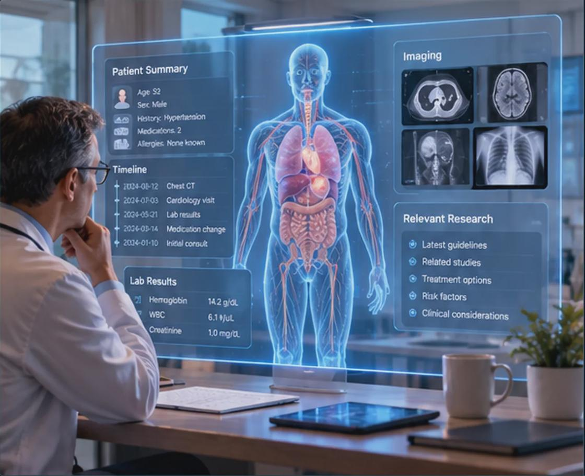
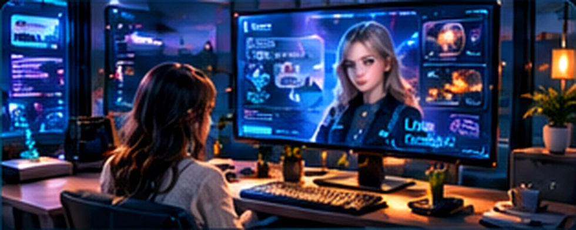

Independent research for real-world impact
Research today.More capable tomorrows.
Kira Labs builds experimental AI systems that study learning, memory and continuity. Our projects connect cognitive research, synthetic people, medical-avatar studies and future robotics—with measured results and clear limitations.
Our research programs
Different paths. A connected vision.
Learning, memory and transfer research, with measured engineering results and unresolved generalization.
Explore NewBrain →
Medical record and digital-anatomy research with planned clinician-reviewed applications.
Explore Patient Horizon →Continuing people, personal apartments, research spaces and distinct memories.
Explore Kira World →An emerging individual with her own interests and histories; original voice, natural movement and release tests remain ahead.
Meet Evelyn →ROS 2 and embodiment research, with simulated safety gates before any real-world robot.
Explore Robotics →
IdeaForge, Video Studio, HumanoidResearcher and other practical research projects.
Explore Tools & Apps →About Kira Labs
Evidence first.
A more capable and humane future.
Kira Labs is an independent AI research initiative based in Newark, New Jersey. We explore cognitive architectures, persistent synthetic identities, accessible technology and future medical and robotic applications—while documenting what works and what still needs testing.
Research evidence · updated October 23, 2026
Measured results.
Clear limitations.
Documented experiments include both passing engineering checks and learning setbacks. Some engineering checks have been independently reviewed; numerical report arithmetic, external replication and broader learning demonstrations remain open.
Browse downloadable reports, test results and real images →October 23 · NewBrain numerical run: an isolated diagnostic has now executed once, retaining a 312,524-byte report covering 105 synthetic cases plus nine invalid-input checks. Independent reviewers accepted the original process evidence and cleanup, but a separate arithmetic verifier still needs to run. Original12 remains 2/12; no validated numerical failure or learning improvement is claimed. Read the scoped result → · Earlier normal-control pass →
October 23 · Evelyn and Avatar Builder: source work now prepares selective camera/body-following privacy covers for future public body pictures, videos and thumbnails while retaining uncensored originals privately. Picture-metadata fixes were prepared and private-stream cleanup is still under review. No new verified anatomy capture, movement video, original voice, conversation, Patient Horizon copy or public installer exists yet. Read the public/private media plan → · Release documentation →
Read all earlier results, dates and detailed research limitations
NewBrain October 21 — newest saved Original12 audit: a distinct 256-update candidate fell from 2/12 → 0/12, while its no-training control stayed 2/12. Training loss decreased, but no assessment answer improved; this failed candidate was not promoted. The accepted Original12 reference stays 2/12. Read the audited negative result → The separate rehearsed three-question study still reached 3/3 after restart, without establishing transfer to new questions. Read that different study →
Latest NewBrain update · October 22: internal independent review now reports a small public B training improvement, 2/3 → 3/3 complete answers after 256 updates, with no-teaching control unchanged at 2/3. The matching coverage arm, fresh-process restart and unfamiliar-question transfer were not tested or accepted for this run. The main Original12 baseline remains 2/12; the earlier separate rehearsed 3/3 restart result is a different experiment. Read the reviewed diagnostic and limitations → · Development targets →
Evelyn Hart · October 22: alongside eight earlier app/library checks, seven additional isolated conversation software checks passed using simulated inputs. Two earlier source issues later passed independent static review; live tests are pending. The 19 local PDFs remain hash-verified. This is not live speech, natural movement or release readiness. Latest seven checks → · Earlier app/library work →
NewBrain · next study: matched replay/no-replay teaching, unfamiliar question combinations and restart checks were implemented in local source, but four source corrections have since passed independent review, but the first control run is still pending. Original12 stays 2/12. Read preparation status →
New Evelyn library result · October 22: a later verified local assembly now contains 30 publications (11 PDFs and 19 text books; 13 technical and 17 varied). The original 22-title stage and its evidence remain preserved. Evelyn has not read any of the 30 books. Actual reading, installation, original voice, conversation, and redistribution rights remain unqualified. Two separate AI/film-and-television research primers were also prepared; neither is evidence of her having studied or watched that material. View the 30-title milestone and limitations →
Evelyn Hart motion update: A separate verified October 20 test now shows eyes closing and reopening with 69.9% left / 72.5% right closure against a 65% requirement. View recorded images and independent check → Her generated voice remains unverified.
October 22 · Avatar Builder development plan: Evelyn's female reference will be used to work toward editable photo/video-guided bodies. A complete female body must be created and qualified before testing other female variants, and natural movement is to be recorded both before and after adding clothing. These are planned acceptance tests, not completed personalized body generation. See the new Avatar Builder stages →
October 21 · Evelyn's actual body reference: Front, side and rear renders were saved and are published with black privacy bars. Front and rear passed framing, but the strict side-framing check failed; the full-body capture is still not accepted. View all three censored technical images →
These results measure different experiments and must not be combined into one score. A separate five-question trial declined from 2/5 to 0/5 after training and remained 0/5 after reload. A distinct-process reload preserved all three explicitly rehearsed answers in the short test. A newer, separate longer-answer test remained 2/3 before and after training: the first answer token improved, but the model stopped before producing required source/version tokens. Neither test establishes held-out generalization. Sampled gradients and one-step update accuracy do not independently establish broad useful learning.